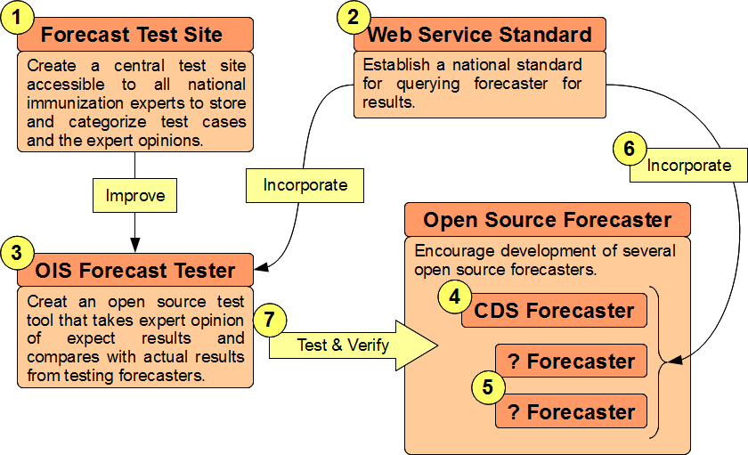

Forecasting
Applications
Open Source Projects
Vision for National Forecasting
Clinical Decision Support (CDS) is critical for clinical professionals, parents and public health agencies to make correct decisions on what vaccination a patient is due to receive. Most particularly clinical professionals need:
- CDS at time of encounter or whenever they view a patient's vaccination history.
- CDS that is accurate, meeting ACIP guidelines and other best practice recommendations.
In addition to this immunization information systems need:
- Ability to control and manage their CDS software at the highest degree possible.
- System that has been tested to meet ACIP and other guidelines.
All of these goals can be reached by having all CDS software systems:
- support a single open standard for external systems to request and receive CDS guidance.
- connect to a national testing system for comparing and verifying CDS performance.
With these two systems in place, and clinical professional who uses an EHR or a public health agency could select any CDS forecaster, at any time, to provide CDS guidance, using the information from the national testing system to determine if the CDS software meets their expectations.
Technology Explanation
CDS information is used by Immunization Information Systems (IIS) to enrich and support IIS functions. Here is a diagram of how CDS information from a Forecaster would ideally be integrated into the IIS and Electronic Health Record (EHR) systems.

- EHR submits vaccination updates to the IIS. This is defined by HL7, CDC Immunization Guide and supported well by Meaningful Use 2 regulations for Certified EHRs.
- IIS matches the incoming data to records submitted by other EHRs. Complete record is stored in associated Patient Data database. Vaccination record is submitted to Forecaster to receive a CDS evaluation and recommendation. The Forecaster does not store any information received, but only gives expert opinion.
- When queried by EHR, IIS returns complete vaccination history and CDS evaluation and recommendations. This is defined by HL7, CDC Immunization Guide, and hopefully will be supported by future versions of Meaningful Use regulation.
- The EHR also has the option of using a CDS directly, submitting its copy of the immunization data directly to the CDS software to receive CDS evaluation and Recommendation.
Question Why would the EHR want to have its own connection to a forecaster? Would it not already have that information from the IIS?
Answer Theoretically, yes. The EHR would not need to have its own forecaster. In reality there are often barriers to getting good forecast results from the registry:
- Not all jurisdictions are currently served by an IIS that responds to queries for patient records.
- Not all IIS return CDS results with patient records.
- IIS have varying levels of success in matching patient records together. EHR systems can not be guaranteed that a patient record will be complete for every patient at every visit.
- Some IIS can not match all patient records together immediately and so do not support patient encounter scenarios that require the entire record to be put together quickly.
- Some IIS may not support or encourage EHR system who wish to query IIS for mass updates for CDS recommendations.
- IIS and EHR may have different priorities that require slightly different recommendations. For example, the IIS may be support VFC requirements with their recommendations while a private physician may not need to consider those requirements.
The goal of CDS is to make it readily available whenever needed. If CDS is sequestered in the IIS then its availability will be limited. It would be best to have redundant systems so that if one does not meet needs the other one will.
What Is Needed
In order for this vision to be put in place there needs to be two things put in place as soon as possible:
- A national standard for Forecast interfaces. The standard used by Open CDS would be a great fit.
- A national testing system. The TCH Forecast Tester is currently working to connect forecasters and could serve as a model for national forecast test system.
Road Map
We need better decision support for immunizations and we need it available to every clinician whenever they need to evaluate a vaccination history. The number of immunizations are increasing and several times a year the Advisory Committee on Immunization Practices (ACIP) releases new recommendations. The sheer number of recommendations and the complexity of them can even be a challenge to immunization expert clinicians to keep up.
What we are calling for is universal access to excellent decision support. To have this basic national infrastructure needs to be put into place:
- We need a standardized national testing and verification framework that encapsulates expert knowledge and decisions. This system should connect to a forecaster of choice to verify that it works according to specific standards.
- Immunization forecasters should use a standard web service interface. Not only would this allow for easy testing and verification but would allow systems to adopt a standard interface first and then decide on their chosen immunization forecaster as a second concern.
- There should be several open source immunization forecasters available and several national web service forecast engines running ready to answer queries. This will mean that any system that wants access to decision support will find it somewhere.
Road Map for Universal Access to an Immunization Forecaster
- Establish a national site that encapsulates all the test cases that have been generated by forecast improvement projects, including the CDS project currently under way. This site would essentially store forecast test cases with expected results attributed to the immunization expert who evaluated them. The system should allow for aggregation into official test sets so the test can be categorized.
- A working web service standard should be developed. This work has not yet been proposed and is not currently in scope for the CDS project. Open Immunization Software is going to look for two or three industry leaders and attempt to forge a common standard.
- Once a national standard for web services is developed the forecast test site can be upgraded to be a forecaster test application. The proposed OIS Forecast Tester would have the expert test cases, with the expected results and would be able to query a forecaster to verify if it meets the expectations of the expert.
- As part of its participation in the CDS project, OIS is attempting to create an open source forecaster. At the very least this project will demonstrate the logic that the CDS project has developed and show how it could be implemented. At best it will serve as a basis for a fully functional forecaster.
- In addition to the possible open source CDS forecaster, OIS is encouraging and watching for the emergence of two new open source forecaster projects. One is currently under development and the other is currently used by a private entity. More information about this will soon be available. The goal of OIS is to encourage as many open source options, to ensure that the community has as many choices as possible.
- The standard web service will need to be supported by the open source forecasters in order to integrate with the OIS Forecast Tester.
- Now the open source forecasters can be tested and verified against a nationally recognized set of test cases. In addition, users will be able to construct their own test case sets in order to verify against their own particular requirements.
When all of these infrastructure pieces in place, any system could be configured to take advantage of the best immunization decision support. The Open Immunization Software project has a goal to have this basic infrastructure in place by the end of this year.